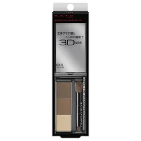
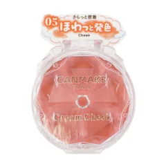
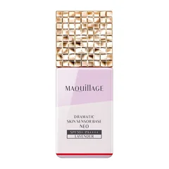
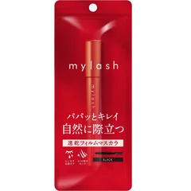

薄く細く描いていた眉を、パウダーでふんわり足したい人

ケイト
デザイニングアイブロウ3D EX-5 ブラウン系
¥1210税込・出典掲載価格
選び方と声
- 選ぶ条件：ペンで1本ずつ描くより、足りない所にパウダーをのせたい人（形は骨格に合わせて）
- 発色がいい、付属のブラシが使いやすい、自然な眉に仕上がるという声
気になる声気になる点：持ち（汗・皮脂）の感じ方は分かれる
販売価格・容量・送料はリンク先でご確認ください
THE COSME EDIT / 2026.10.23
動画と同じ写真・名前・順番で並べています。見出しは順位ではなく、選ぶ条件です。4つそろえる前提ではありません。毎朝のメイクを30年同じ順番でやってきて、50代になって「なんか違う」と感じる人が、薄く細くしていた眉と、抑えていたチーク・リップの色を足し、重ねていたファンデと濃いアイメイクを引く、という話を会話でまとめました。まずは買わなくてもできること（ファンデを広げない・鏡を離す・粉は部分だけ・今あるシャドウを薄く）を試してから、自分に合う1つか2つだけ選んでください。ガールズちゃんねるの「50代のメイク」のトピから声を集め、足すもの・引くものは資生堂・コーセーの公開情報で確かめたものです。若く見える・老けなくなると約束する話ではありません。肌に合わないときは使うのをやめて、赤みやかゆみがひどいときは皮膚科へ。
04 ITEMS 動画で紹介した商品
動画では商品のほかに、ナチュラルメイクがぼんやり見えることがある理由、厚塗り・眉を薄く細く・目元だけ濃いグラデ・チークとリップの色を抑える、の4つのNG、下地7：ファンデ3の比率、ファンデは頬の中央にのせて広げすぎないこと、アイラインはブラウンで細く（まつ毛の隙間を埋める）こと、鏡は仕上げに離して見ること、粉はTゾーンと小鼻の脇だけにすることも話しています。
価格は出典掲載時のものです。楽天の現在価格とは異なる場合があります。

ケイト
¥1210税込・出典掲載価格
選び方と声
気になる声気になる点：持ち（汗・皮脂）の感じ方は分かれる
販売価格・容量・送料はリンク先でご確認ください

キャンメイク
¥638税込・出典掲載価格
選び方と声
気になる声気になる点：ラメ・パールの濃さの感じ方は分かれる。買う前に色の説明を見る
販売価格・容量・送料はリンク先でご確認ください

マキアージュ
25mL
¥2970税込・出典掲載価格
選び方と声
気になる声気になる点：保湿の感じ方は分かれ、乾燥肌には向かないという声もある。値段は高め
販売価格・容量・送料はリンク先でご確認ください

オペラ
¥1100税込・出典掲載価格
選び方と声
気になる声気になる点：値段が高いと感じる声がある。パンダ目の感じ方は人による
販売価格・容量・送料はリンク先でご確認ください
SOURCE & NOTES
集計期間：2026年10月23日に確認
価格は2026年10月23日に確認した税込価格です（掲載時点）。4品とも Amazon の価格（販売元 Amazon.co.jp）です。価格は変わることがあります。購入前にリンク先でご確認ください。見出しは選ぶ条件で、順位ではありません。